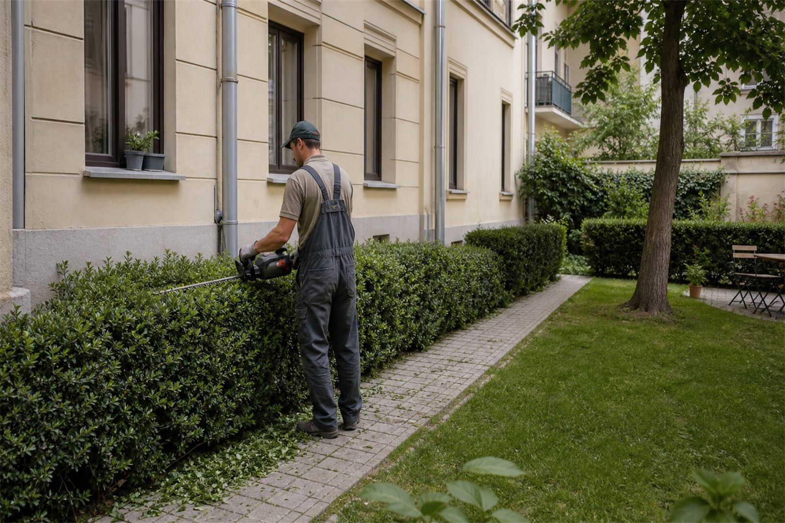

Magyar és angol egyeztetés tulajdonosokkal, kezelőkkel és helyszíni kapcsolattartókkal, röviden és követhetően.Hungarian and English coordination with owners, managers and local contacts, kept clear and easy to follow.
Budapesti ingatlankarbantartásProperty maintenance in Budapest
Ingatlankarbantartás Budapesten, átláthatóan és távolról is követhetően.Professional property maintenance in Budapest you can follow from anywhere.
Megbízható karbantartási háttér külföldön élő tulajdonosoknak, lakásbefektetőknek, Airbnb-házigazdáknak, irodáknak és képviseleti ingatlanoknak. Kisebb javítások, festés, gipszkarton, kertgondozás, fotós visszajelzés és magyar-angol egyeztetés, átlátható munkamenetben. A reliable maintenance partner for owners living abroad, apartment investors, Airbnb hosts, offices and representative properties in Budapest. Minor repairs, painting, drywall work, garden care, photo updates and Hungarian-English coordination, handled through a clear workflow.

Miért praktikus?Why it worksFotók, feladatlista, egyeztetett lépések.Photos, a clear task list and agreed next steps.
Kérés szerint fotós frissítések a kiinduló állapotról, a fontos munkafázisokról és az átadásról.Photo updates can show the starting condition, key work stages and the final handover.
Budapesti lakások, irodák, társasházi udvarok és közeli ingatlanok gyakorlati igényeire szabva.Tailored to the practical needs of Budapest apartments, offices, courtyards and nearby properties.
Az oldalon szereplő képek illusztrációk, amelyek tipikus munkafolyamatokat és várható eredményeket mutatnak.The images on this website are illustrative examples showing typical work processes and expected results.
01
Mit tartalmazhat a karbantartás?What can property maintenance include?
A karbantartás akkor működik jól, ha a feladatok láthatóak, a döntési pontok egyértelműek, és a kivitelezés nem igényel állandó utánajárást. A munkát a helyszín, az ingatlan állapota, a hozzáférés és az időzítés alapján egyeztetjük.Good maintenance starts with visible tasks, clear decisions and work that does not require constant chasing. Scope is agreed around the property, current condition, access and timing.
Rendszeres állapotellenőrzésRegular condition checks
Látható hibák, beázásnyomok, falhibák, udvari vagy közös területi problémák áttekintése. Különösen hasznos, ha a tulajdonos nincs Budapesten, mégis szeretne tiszta képet kapni az ingatlan állapotáról.Visible defects, water marks, wall damage, courtyard issues and shared-area concerns can be reviewed. Especially useful when the owner is not in Budapest but still needs a clear picture of the property.
Kisebb javítások és megelőző karbantartásMinor repairs and preventive maintenance
Rögzítések, apró szerelések, javítások és a vendégváltás, bérlőváltás vagy frissítés előtt felmerülő teendők rendezése. A cél a gyorsan kezelhető hibák időben történő megoldása.Fittings, small installation work, repairs and practical tasks before a refresh, after a tenant move-out or between guest stays. The aim is to resolve manageable issues before they become bigger problems.
Festés és faljavításPainting and wall touch-ups
Falnyomok, kisebb sérülések, glettelés, javítófestés vagy teljes helyiségfestés bérbeadás, eladás, fotózás vagy átadás előtt.Wall marks, small damage, patching, touch-up painting or full room painting before rental, sale, photography or handover.
Gipszkarton és praktikus javításokDrywall and practical repairs
Gipszkarton sérülések, kisebb falnyílások, felületi hibák és bérlőváltás után előkerülő javítások kezelése, átlátható feladatlistával.Drywall damage, small openings, surface defects and post-tenant repair items handled through a practical, transparent task list.
Kert, udvar és kültéri rendGarden, courtyard and outdoor care
Fűnyírás, sövényigazítás, cserjemetszés, zöldhulladék-rendezés és rendezettebb udvari megjelenés budapesti társasházaknál, irodáknál és magáningatlanoknál.Mowing, hedge trimming, shrub pruning, green waste organisation and cleaner outdoor presentation for Budapest apartment buildings, offices and private homes.
Fotós visszajelzés és egyeztetésPhoto updates and reporting
A fontos lépésekről kérés szerint fotók készülnek, így a tulajdonos, kezelő vagy irodai kapcsolattartó távolról is követni tudja, mi történt a helyszínen.Photos can be sent at key stages so the owner, manager or office contact can follow what happened on site, even remotely.
02
Kinek és milyen helyzetekben segítünk?Who we support and when it helps
A szolgáltatás azoknak hasznos, akiknek fontos, hogy a budapesti ingatlan karbantartása szervezetten, fotókkal követhetően és felesleges körök nélkül haladjon. A feladat lehet egy gyors faljavítás, vendégváltás utáni rendbetétel, irodai frissítés vagy szezonális udvari munka.This service is designed for clients who need Budapest property maintenance to move in an organised, photo-documented and practical way. The task may be a quick wall repair, post-guest touch-up, office refresh or seasonal outdoor work.
- Külföldön élő tulajdonosokOwners living abroadHa fontos a távoli egyeztetés, a fotós visszajelzés, a hozzáférés megszervezése és a követhető döntési pontok.For remote coordination, photo updates, arranged access and decision points that remain easy to follow.
- Airbnb-házigazdák és lakásbefektetőkAirbnb hosts and apartment investorsVendégváltás, bérlőváltás, kisebb hibák, falnyomok és bemutatás vagy fotózás előtti frissítés esetén.For guest turnover, tenant move-out, small defects, wall marks and presentation before a viewing or photo session.
- Irodák, képviseletek és kereskedelmi ingatlanokOffices, embassies and commercial propertiesHa egy látogatás, átadás vagy napi működés előtt gyorsan és diszkréten rendezni kell a látható hibákat.When visible issues need to be handled quickly and discreetly before a visit, handover or normal operation.
- Magánházak és lakástulajdonosokPrivate homeowners and apartment ownersCsaládi házak, saját lakások, kisebb javítások, festés, gipszkarton, kertgondozás, szezonális karbantartás, költözés vagy eladás előtti előkészítés.Family houses, owner-occupied apartments, small repairs, painting, drywall repairs, garden care, seasonal maintenance and preparation before moving in or selling.



A képek illusztratív példák: azt mutatják, milyen jellegű helyzeteknél hasznos a karbantartási háttér, nem konkrét elkészült referenciák.These are illustrative examples showing the kind of situations where maintenance support is useful; they are not presented as completed project references.
03
Hogyan működik a folyamat?How the process works
A legtöbb karbantartási feladat néhány fotóval, rövid leírással és egyértelmű hozzáférési információval elindítható. Összetettebb vagy rejtett hibáknál helyszíni felmérésre lehet szükség.Most maintenance tasks can start with a few photos, a short brief and clear access information. More complex or hidden issues may require an on-site assessment.
Fotók és rövid leírásPhotos and short brief
Küldje el a címet vagy kerületet, a látható hibákat, a kívánt időzítést és azt, hogyan lehet bejutni az ingatlanba.Send the address or district, visible issues, preferred timing and how access to the property can be arranged.
Feladatlista és következő lépésTask list and next step
Tisztázzuk, mi ítélhető meg fotók alapján, hol kell további információ, és mikor indokolt helyszíni felmérés.We clarify what can be assessed from photos, where more information is needed and when an on-site visit makes sense.
Szervezett munkavégzésOrganised work
A kivitelezés a jóváhagyott feladatlista szerint halad. Ha közben új tétel merül fel, azt külön egyeztetjük, mielőtt változna a munkatartalom.Work follows the agreed task list. If a new item appears during the visit, it is discussed separately before the scope changes.
Fotós visszajelzés és átadásPhoto update and handover
A kész állapotról, a lényeges részletekről és a következő lehetséges teendőkről kérés szerint fotós összefoglalót küldünk.A photo summary of the finished condition, important details and possible next steps can be sent on request.
04
Miért a Budapest Property Services?Why choose Budapest Property Services?
Budapesti ingatlanoknál sokszor nem a munka mérete a legnagyobb kihívás, hanem a hozzáférés, az egyeztetés és a döntések követhető kezelése. Ebben segítünk.With Budapest properties, the biggest challenge is often not the size of the job, but access, coordination and clear decision-making. That is where we help.
Átlátható kommunikációClear communication
A feladatokat röviden, érthetően és magyarul vagy angolul is lehet egyeztetni. Ez különösen fontos, ha a tulajdonos, kezelő és a helyszíni munka nem ugyanott zajlik.Tasks can be discussed clearly in Hungarian or English. This is especially valuable when the owner, manager and on-site work are not in the same place.
Rendezett munkamenetOrganised workflow
A kisebb javítások, festési feladatok, udvari munkák és átadás előtti teendők egy átlátható, kezelhető listába kerülnek.Small repairs, painting tasks, outdoor work and pre-handover items are organised into a clear, manageable task list.
Budapest-fókuszBudapest focus
Belvárosi lakások, társasházi udvarok, irodák, kiadó ingatlanok és magánotthonok budapesti működéséhez igazított segítség.Support adapted to the practical reality of Budapest city apartments, courtyard buildings, offices, rental properties and private homes.
05
Gyakori kérdések az ingatlankarbantartásrólProperty maintenance FAQ
Gyakorlati válaszok tulajdonosoknak, kezelőknek, Airbnb-házigazdáknak és irodai kapcsolattartóknak.Practical answers for owners, managers, Airbnb hosts and office contacts.
Dolgoznak külföldön élő tulajdonosokkal?Do you work with owners living abroad?
Igen. A feladat távolról is egyeztethető, ha a bejutás, a döntési jogosultság és a helyszíni hozzáférés rendezett. A fontos lépésekről kérés szerint fotós visszajelzést küldünk.Yes. Work can be coordinated remotely when access, decision-making authority and local entry are clear. Photo updates can be sent for key steps on request.
Milyen ingatlanokat vállalnak?What types of properties do you maintain?
Budapesti lakásokkal, magánházakkal, Airbnb-ingatlanokkal, irodákkal, kereskedelmi és képviseleti célú terekkel is lehet egyeztetni. A vállalhatóságot mindig a helyszín, a feladatlista és az időzítés alapján erősítjük meg.We can discuss Budapest apartments, private houses, Airbnb properties, offices, commercial spaces and representative interiors. Feasibility is confirmed based on location, scope and timing.
Lehet helyszíni ellenőrzést kérni?Can you inspect a property before starting?
Igen, ha a fotók alapján nem dönthető el pontosan a műszaki tartalom, érdemes helyszíni felmérést kérni. Ilyenkor a látható hibákat, hozzáférést és lehetséges következő lépéseket nézzük át.Yes. If the technical scope cannot be understood from photos, an on-site assessment is usually the right next step. Visible issues, access and possible next actions are reviewed.
Vállalnak kisebb javításokat is?Do you handle small repairs?
Igen, sok feladat éppen kisebb, de fontos javítás: falnyomok, rögzítések, apró szerelés, gipszkartonhiba vagy átadás előtti frissítés. A cél az, hogy az ingatlan rendezettebb és használhatóbb legyen.Yes. Many tasks are small but important: wall marks, fittings, minor installation work, drywall defects or pre-handover touch-ups. The goal is to make the property cleaner, more orderly and easier to use.
Segítenek Airbnb vendégváltás után?Can you help after Airbnb guest turnover?
Igen, ha vendégváltás után falhibák, kisebb sérülések, kerti vagy prezentációs teendők maradnak, a feladatok fotók alapján gyorsan előkészíthetők. Rövid határidőnél a kapacitást és a feladat méretét külön egyeztetjük.Yes. If wall marks, small damage, outdoor tasks or presentation issues remain after a stay, the task list can often be prepared from photos. Short deadlines are confirmed against capacity and scope.
Küldenek fotókat a munkáról?Do you send photos of the work?
Kérés szerint igen. A fotók segítenek abban, hogy a tulajdonos vagy kezelő akkor is átlássa a helyzetet, ha nincs Budapesten. Nem helyettesítik a helyszíni döntéseket, de praktikus visszajelzést adnak.Yes, on request. Photos help owners and managers understand the situation even when they are not in Budapest. They do not replace on-site decisions, but they provide practical updates.
Lehet angolul egyeztetni?Is English communication available?
Igen. A feladat egyeztetése, a fontos kérdések tisztázása és az átadás magyarul vagy angolul is történhet. Ez különösen hasznos külföldi tulajdonosoknál, irodáknál és képviseleti ingatlanoknál.Yes. Scope, key questions and handover can be discussed in Hungarian or English. This is especially useful for foreign owners, offices and representative properties.
Vállalnak kertet és udvart is?Can you maintain gardens and courtyards?
Igen, budapesti kertek, társasházi udvarok és kisebb kültéri területek rendezésében is lehet egyeztetni. Ide tartozhat fűnyírás, sövényigazítás, cserjemetszés és általános kültéri rendbetétel.Yes. Budapest gardens, apartment courtyards and smaller outdoor areas can be discussed. This may include mowing, hedge trimming, shrub pruning and general outdoor tidying.
Hogyan lehet ajánlatot kérni?How do I request a quote?
A legegyszerűbb, ha WhatsAppon elküldi a fotókat, a budapesti címet vagy kerületet, a kívánt határidőt és a rövid feladatleírást. Ez alapján tisztázható, hogy elegendő-e a fotós egyeztetés, vagy szükséges helyszíni felmérés.The easiest way is to send photos on WhatsApp with the Budapest address or district, preferred timing and a short description. From there we can clarify whether photos are enough or an on-site assessment is needed.
Vállalnak sürgős munkát?Do you handle urgent work?
Sürgős feladatokat kapacitás, helyszín és munkaméret alapján lehet megvizsgálni. Érdemes már az első üzenetben jelezni a határidőt és elküldeni a legfontosabb fotókat, hogy reálisan lehessen dönteni.Urgent tasks can be reviewed based on capacity, location and scope. Include the deadline and the most important photos in the first message so feasibility can be assessed realistically.
Következő lépésNext step
Küldjön néhány fotót, és egyeztessük a következő ésszerű lépést.Send a few photos and let’s clarify the next practical step.
Egy rövid üzenet is elég: fotók, helyszín vagy kerület, időzítés, hozzáférés és a legfontosabb cél. Válaszban segítünk eldönteni, elég-e a fotós egyeztetés, vagy érdemes helyszíni felméréssel kezdeni.A short message is enough: photos, location or district, timing, access and the main goal. In reply, we help clarify whether photos are enough or whether an on-site assessment is the better first step.
2-3 fotó2-3 photosBudapesti cím vagy kerületBudapest address or districtHozzáférésAccessIdőzítésTiming
+36 20 667 1832Fotók küldése WhatsApponSend photos on WhatsAppTelefonszám másolásaVissza a főoldalraBack to homepageElsődleges terület: Budapest és közvetlen környéke. Magyar és angol egyeztetés.Primary service area: Budapest and nearby locations. Hungarian and English communication.